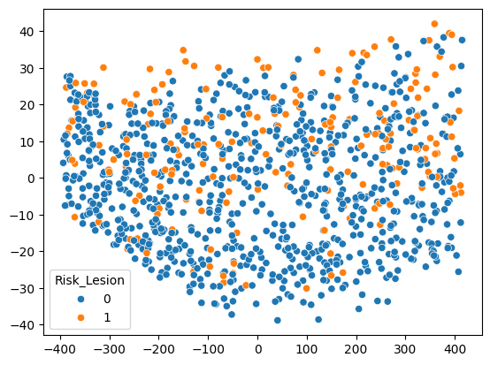

import pandas as pd
import numpy as np
import seaborn as sns
import matplotlib.pyplot as plt
from pathlib import Path
print("CWD =", Path.cwd())
data_path = "./data"CWD = /home/sylph/Data_Cantatio/pablocaicedor.github.ioimport pandas as pd
import numpy as np
import seaborn as sns
import matplotlib.pyplot as plt
from pathlib import Path
print("CWD =", Path.cwd())
data_path = "./data"CWD = /home/sylph/Data_Cantatio/pablocaicedor.github.iodf = pd.read_csv(data_path+"/Injury_Risk/Injury_Risk.csv")df.head()| Knee_Flex_deg | EMG_Quad_RMS_mV | EMG_Ham_RMS_mV | GRF_Vert_Norm_BW | Omega_Shank_deg_s | Hip_Flex_deg | Risk_Lesion | |
|---|---|---|---|---|---|---|---|
| 0 | 57.301317 | 0.106144 | 0.045175 | 0.340217 | 138.162395 | 18.599794 | 0.0 |
| 1 | 80.432556 | 0.238664 | 0.112961 | 0.321072 | 237.345118 | 30.271616 | 0.0 |
| 2 | 15.173465 | 0.188359 | 0.175860 | 1.178131 | -199.625681 | 28.008046 | 0.0 |
| 3 | 33.732813 | 0.157691 | 0.149123 | 0.324410 | 99.899280 | -2.305005 | 0.0 |
| 4 | 16.810117 | 0.055884 | 0.163247 | 0.353535 | 57.396787 | -2.537527 | 1.0 |
df["Risk_Lesion"] = df["Risk_Lesion"].astype("category")
df.info()
numregistros, numvariables = df.shape<class 'pandas.core.frame.DataFrame'>
RangeIndex: 1000 entries, 0 to 999
Data columns (total 7 columns):
# Column Non-Null Count Dtype
--- ------ -------------- -----
0 Knee_Flex_deg 1000 non-null float64
1 EMG_Quad_RMS_mV 1000 non-null float64
2 EMG_Ham_RMS_mV 1000 non-null float64
3 GRF_Vert_Norm_BW 1000 non-null float64
4 Omega_Shank_deg_s 1000 non-null float64
5 Hip_Flex_deg 1000 non-null float64
6 Risk_Lesion 1000 non-null float64
dtypes: float64(7)
memory usage: 54.8 KBtbl_missing = df.isna().sum()
tbl_missing = 100*tbl_missing/numregistros
lbls = tbl_missing.index.values
vals = tbl_missing.values
plt.figure(figsize=(10,6))
sns.barplot(x=lbls, y=vals)
plt.xticks(rotation=90)
plt.ylabel("% of missing values")
plt.title("Percentage of Missing Values per Variable")
plt.show()
vals.shape
100*(df.nunique().astype(np.float64)/numregistros)Knee_Flex_deg 77.2
EMG_Quad_RMS_mV 100.0
EMG_Ham_RMS_mV 100.0
GRF_Vert_Norm_BW 100.0
Omega_Shank_deg_s 100.0
Hip_Flex_deg 100.0
Risk_Lesion 0.2
dtype: float64df["z_score_knee_flex"]=(df["Knee_Flex_deg"]-df["Knee_Flex_deg"].mean())/df["Knee_Flex_deg"].std()
df.loc[df["z_score_knee_flex"].abs()>3, "Knee_Flex_deg"].value_counts()
Q3 = df["Knee_Flex_deg"].quantile(0.75)
Q1 = df["Knee_Flex_deg"].quantile(0.25)
IQR = Q3 - Q1
lower_bound = Q1 - 1.5 * IQR
upper_bound = Q3 + 1.5 * IQR
outliers = df[(df["Knee_Flex_deg"] < lower_bound) | (df["Knee_Flex_deg"] > upper_bound)]
outliers["Knee_Flex_deg"].value_counts()Series([], Name: count, dtype: int64)df["Risk_Lesion"].value_counts()Risk_Lesion
1.0 506
0.0 494
Name: count, dtype: int64sns.scatterplot(data=df, x="Knee_Flex_deg", y="Hip_Flex_deg", hue="Risk_Lesion")
df.corr()| Knee_Flex_deg | EMG_Quad_RMS_mV | EMG_Ham_RMS_mV | GRF_Vert_Norm_BW | Omega_Shank_deg_s | Hip_Flex_deg | Risk_Lesion | z_score_knee_flex | |
|---|---|---|---|---|---|---|---|---|
| Knee_Flex_deg | 1.000000 | 0.028383 | -0.062662 | 0.087365 | 0.939718 | 0.177873 | 0.118338 | 1.000000 |
| EMG_Quad_RMS_mV | 0.028383 | 1.000000 | 0.029310 | 0.014518 | -0.029424 | 0.034785 | -0.446479 | 0.028383 |
| EMG_Ham_RMS_mV | -0.062662 | 0.029310 | 1.000000 | 0.027262 | -0.005791 | 0.032911 | 0.272992 | -0.062662 |
| GRF_Vert_Norm_BW | 0.087365 | 0.014518 | 0.027262 | 1.000000 | -0.013560 | -0.008858 | 0.037039 | 0.087365 |
| Omega_Shank_deg_s | 0.939718 | -0.029424 | -0.005791 | -0.013560 | 1.000000 | -0.044812 | 0.066284 | 0.939718 |
| Hip_Flex_deg | 0.177873 | 0.034785 | 0.032911 | -0.008858 | -0.044812 | 1.000000 | 0.049999 | 0.177873 |
| Risk_Lesion | 0.118338 | -0.446479 | 0.272992 | 0.037039 | 0.066284 | 0.049999 | 1.000000 | 0.118338 |
| z_score_knee_flex | 1.000000 | 0.028383 | -0.062662 | 0.087365 | 0.939718 | 0.177873 | 0.118338 | 1.000000 |